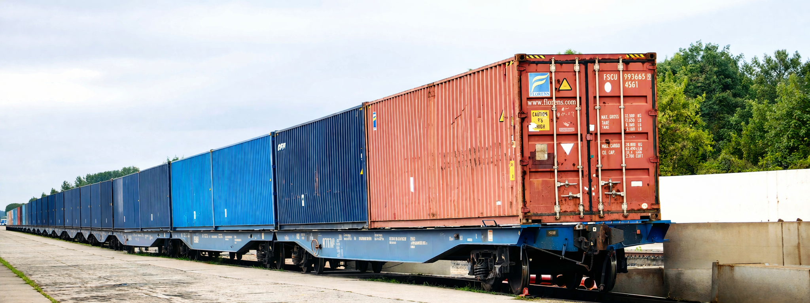
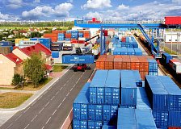
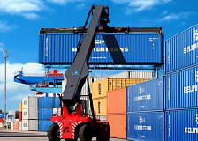
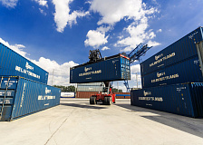
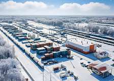
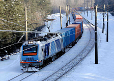

Нормативно-справочная информация
Скачать файлПредоставление железнодорожных транспортеров
Скачать файлТарифы на грузоперевозки
Скачать файлРабота с собственным подвижным составом
Скачать файлСервисы Портала электронных услуг
Скачать файлЗаключение договоров с экспедиторскими организациями
Скачать файл
12 мая 2026
14 мая 2026 года Белорусская железная дорога проведет диалоговую площадку по вопросам организации транспортно-логистического обслуживания клиентов на терминале станции Колядичи
Приглашаем всех заинтересованных лиц к участию в мероприятии с целью выработки новых подходов и выгодных предложений для вашей логистики.
Место проведения: г. Минск, ул. Брест-Литовская, 13. Начало проведения диалоговой площадки: 09.00.

14 апреля 2026
Белорусская железная дорога информирует о применении на постоянной основе на терминале «Колядичи» специального тарифа на погрузку крупнотоннажных контейнеров на автотранспорт
Специальный тариф (скидка в размере 30%) применяется на терминале «Колядичи» (ТЛЦ «Минск») для клиентов на погрузку крупнотоннажных контейнеров на автотранспорт в будние дни с 23.00 до 06.00, а также с пятницы 23:00 до понедельника 06:00 теперь на постоянной основе.
Обращаем внимание, тариф действует только при условии, что автотранспортное средство заехало и выехало на/с территорию(и) терминала в указанный период времени.

01 апреля 2026
Сборный контейнерный поезд: новый этап перевозок из Беларуси в Китай
Белорусская железная дорога реализует сервис сборных контейнерных поездов через своего логистического оператора – государственное предприятие «БЕЛИНТЕРТРАНС».
31 марта 2026 года со станции Колядичи отправился сборный контейнерный поезд «Колосок» назначением в Китайскую Народную Республику.

20 февраля 2026
Белорусская железная дорога информирует: особые условия работы на терминале «Колядичи» продлены до 31 марта
Белорусской железной дорогой и Государственным таможенным комитетом обеспечено взаимодействие по организации непрерывной работы пункта таможенного оформления на станции Колядичи. Режим работы продлен до 31 марта 2026 года на круглосуточной основе (24/7), что предоставляет возможность клиентам проводить таможенное оформление грузов в ночное время, осуществлять вывоз контейнеров с терминала и завоз на терминал автомобильным транспортом в независимости от времени суток, а также минимизировать простои подвижного состава и избежать высокой загруженности в дневные часы.
Для клиентов терминала «Колядичи» (ТЛЦ «Минск») установлен специальный тариф на погрузку крупнотоннажных контейнеров на автотранспорт. Скидка в размере 30% действует в будние дни с 23.00 до 06.00, в выходные дни (суббота и воскресенье) – круглосуточно.

03 февраля 2026
Белорусская железная дорога информирует
В соответствии с Решением Коллегии Евразийской экономической комиссии с 11 февраля 2026 года для отслеживания перевозок железнодорожным транспортом по территории ЕАЭС будут использоваться навигационные пломбы.
Они применяются в целях обеспечения операций контроля соответствующими государственными органами.